자연생태복원기사(구) (2008-05-11 기출문제)
1과목: 환경생태학개론
1. 생물다양성 유지를 위한 보호지구 설정을 위해 흔히 이용하는 도서생물지리 모험(island biogeographical model)의 내용과 거리가 먼 것은?
- 보호지구는 여러 개로 분산시킨다.
- 보호지구는 넓게 조성한다.
- 보호지구는 최대한 서로 가깝게 붙도록 조성한다.
- 원형이 유리하며, 지구 간에 생태통로를 조성한다.
(정답률: 알수없음)

2. 갯벌은 모래 갯벌, 펄 갯벌, 혼합 갯벌로 구분한다. 다음 중 모래 갯벌(sand flat)에 관한 설명이 아닌 것은?
- 사질 갯벌이라고도 하며, 바닥이 주로 모래질로 형성되어 있다.
- 해수의 흐름이 빠른 수로 주변이나 바람이 강한 지역의 해변에 나타나는데, 해안경사가 급하고 갯벌의 폭이 좁아 보통 1km 정도이다.
- 약간의 펄이 섞인 우리나라 서해안 모래 갯벌에는 갑각류나 조개류보다는 퇴적물 식을 하는 갯지렁이류가 우점한다.
- 저질의 모래 알갱이의 평균 크기가 0.2~0.7mm 정도이고, 니질(泥質) 함량비가 대체로 4%를 넘지 않는다.
(정답률: 알수없음)
3. 다음 중 유엔(UN)기후변화협약에서 언급하고 있는 온실가스가 아닌 것은?
- 아산화질소
- 이산화탄소
- 메탄
- 이산화황
(정답률: 알수없음)
4. 다음 설명하는 식생대를 무엇이라 하는가?
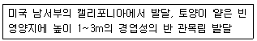
- 스템
- 채퍼랠
- 프레리
- 팜파스
(정답률: 알수없음)
5. 온도에 대한 생물의 적응과 관련된 설명으로 부적합한 것은?
- 동물의 겨울잠을 변온동물에서만 있는 일이다.
- Allen의 법칙은 항온동물의 경우 추운 지방일수록 몸의 말단부가 작아진다는 것이다.
- Bergman의 법칙은 항온동물의 경우 동종 또는 가까운 종류에서는 남방보다는 북방에 서식하는 동물이 일반적으로 체중이 늘어나는 경향이 있다는 것이다.
- 낙엽수는 겨울의 저온시 잎을 떨어뜨려 추위를 견딘다.
(정답률: 알수없음)
6. 다음 ( )에 들어갈 용어는?
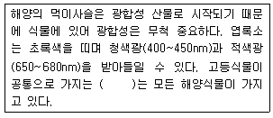
- 엽록소 a
- 엽록소 b
- 엽록소 c
- 엽록소 d
(정답률: 알수없음)
7. 개체군(population)의 출생률과 사망률 모두에 특히 영향을 주는 중요한 개체군의 특징은?
- 수용 능력(carrying capacity)
- 환경 저항(environmental resistance)
- 생식 잠재력(reproductive potential)
- 연령 분포(age distribution)
(정답률: 알수없음)
8. 다음 호소의 각 식생대의 주요 구성종으로 맞지 않는 것은?
- 침수식물 : 검정말, 붕어마름
- 정수식물 : 부들, 골풀
- 소택관목식물 : 연, 굴참나무
- 부유식물 : 개구리밥, 생이가래
(정답률: 알수없음)
9. 현재까지 학계에 보고된 생물종 중 종다양성이 가장 높은 분류군은?
- 포유류
- 절지동물
- 고등식물과 하등식물
- 연체동물
(정답률: 알수없음)
10. 다음 중 호수에서 조류(藻類)의 대발생을 야기하는 환경조건은?
- 깊은 호수에서 강제수체순환을 통한 성충 파괴
- 인(phosphorus) 제한 호소에서 인의 농도는 낮고 질소농도가 매우 높은 경우
- 댐 호에서 수체교환률 증가에 따른 체류시간 감소
- 일조량의 증가
(정답률: 알수없음)
11. 생태계의 단위면적 또는 부피당 생태계 구성요소의 전체건중량(생채량)을 가리키는 것은?
- 생산성
- 1차 생산성
- 2차 생산성
- 생물량
(정답률: 알수없음)
12. 수생태계에 미치는 영향 중 부영양화의 직접적인 원인이 아닌 것은?
- 생활하수
- 집중호우
- 가축분뇨
- 농경지 유출수
(정답률: 알수없음)
13. 다음은 빈칸에 적합한 용어들은?
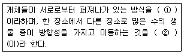
- ㉠ 분산, ㉡ 이주
- ㉠ 분산, ㉡ 번식
- ㉠ 이주, ㉡ 번식
- ㉠ 번식, ㉡ 분산
(정답률: 알수없음)
14. 육상식물의 주요 생태계를 잘못 설명한 것은?
- 사막은 일반적으로 연평균 강우량이 25cm 미만의 지역에 생기지만 때로는 강우량이 훨씬 많아도 매우 불균등하게 분포하는 지역에도 생긴다.
- 열대사바나는 연평균 강우량이 100~150cm 정도의 온난한 지역에서 볼 수 있으나 건기가 길고 화재가 빈번히 발생하는 곳에 생긴다.
- 열대우림은 연평균 강우량이 250~450cm 정도에 이르고, 연간 비가 내리는 지역에 생긴다.
- Chaparral은 여름에 비가 많이 오고, 겨울에 건조되는 지역의 극상식생으로 두꺼운 상록의 잎을 가진 수목이나 관목으로 되어있다.
(정답률: 알수없음)
15. 단위면적당 총 건조중량을 피라미드로 표현한 것은?
- 개체수 피라미드
- 생체량 피라미드
- 에너지 피라미드
- 생산력 피라미드
(정답률: 알수없음)
16. 환경변화에 대한 생물체의 반응(response)이 아닌 것은?
- 차폐(masking)
- 압맙(stress)
- 치사(lethal)
- 조절(controlling)
(정답률: 알수없음)
17. 생태계 내 에너지에 대한 설명으로 옳은 것은?
- 일정한 생태계 내에서 에너지는 물질과 함께 순환하여 소멸되지 않는다.
- 고사한 식물체나 초식동물이 소화할 수 없는 배설물의 에너지는 육식동물이 이용한다.
- 광합성으로 유기물에 저장된 에너지의 일부는 녹색식물의 생장과 유지를 위한 호흡으로 이용된다.
- 동물은 성장과 생식을 위해 에너지를 필요로 하며 식물과는 달리 화학합성을 통해 에너지를 물질로 변환 이용한다.
(정답률: 알수없음)
18. 생태계에 있어서 기능적인 면에서의 구성요소가 아닌 것은?
- energy 흐름
- 먹이연쇄
- 영양염 순환
- 발달과 퇴화
(정답률: 알수없음)
19. 다음 인(P)과 관련된 내용 중 거리가 먼 것은?
- 인(P)은 상온에서 기체상태의 화합물을 형성하지 않는다.
- 인(P)의 저장고는 지질시대에 조성된 암석이나 그 밖에 퇴적물이다.
- 핵산 인지질 ATP 등은 인(P)의 구성물질이다.
- 식물의 이용은 기체상태의 화합물로 형성된 과정이 있어야 한다.
(정답률: 알수없음)
20. 환경의 이상 기후 현상인 엘니뇨(El Nino) 에 관한 설명으로 틀린 것은?
- 지구 서부 태평양 적도 인근 해수면의 온도가 평상시보다 3~4℃ 상승한다.
- 남피 페루 해안지역에 해류 순환이 변화되어 어업의 피해와 폭풍, 홍수 등의 각종 재난을 초래한다.
- 엘니뇨의 어원은 스페인어로 아기 예수를 뜻한다.
- 이산화탄소가 주 요인이고, 이에 지구의 온도가 상승되는 기상 이변 현상이다.
(정답률: 알수없음)
2과목: 환경계획학
21. 우리나라에서 환경보전을 목적으로 활용되는 토지이용 규제에 해당이 되지 않는 것은?
- 토지관련 법령에 의한 토지의 기능과 적성을 고려
- 일정한 지역을 환경보전에 필요한 지역으로 지정하여 규제
- 지역, 지구를 지정하여 환경보전 목적에 배치되는 일정한 행위를 제한
- 자연환경보전법에 의한 특별대책지역으로 지정
(정답률: 알수없음)
22. 환경파괴에 의한 피해나 환경보전에 의한 편익의 경제적인 가치를 평가하는 방법에 해당하지 않는 경우는?
- 지불용의액에 의한 추정
- 여행비용에 의한 추정
- 속성가격에 의한 추정
- 환경용량가치 추정
(정답률: 알수없음)
23. 유네스코의 인간과 생물권(Man and Biosphere) 계획의 틀안에서 생태적으로 중료한 지역을 관리하기 위해 설정한 생물권 보전지역을 구분한 관리지역의 종류가 아닌 것은?
- 전이지역
- 보전지역
- 핵심지역
- 완충지역
(정답률: 알수없음)
24. 다음 [보기] 설명에 ( )안에 들어갈 용어로 전체 설명 또한 어느 ‘국제협력 프로그램’의 설명인가?
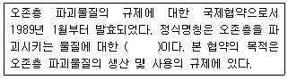
- 바젤협약
- 기후변화협약 교토의정서
- 람사협약
- 몬트리올 의정서
(정답률: 알수없음)
25. 녹지자연도는 일정토지의 자연성을 나타내는 지표로서, 식생과 토지이용현황에 따라 녹지공간의 상태를 등급화 한 것이다. 우리나라 ‘생태자연도 작성지침’에서는 ‘녹지자연도’ 등급을 그 보전가치에 따라 몇 등급으로 구분하고 있는가?
- 1등급~10등급(10개 등급)
- 0등급~9등급(10개 등급)
- 1등급~9등급(9개 등급)
- 1등급~11등급(11개 등급)
(정답률: 알수없음)
26. 다음 중 ‘자연환경보전기본계획’의 주요 내용이 아닌 것은?
- 환경단체별로 추진할 주요시책에 관한 사항
- 자연환경의 현황 및 전망에 관한 사항
- 자연환경보전에 관한 기본방향 및 보전목표설정에 관한 사항
- 각 시ㆍ도에서 추진할 주요 자연보전시책에 관한 사항
(정답률: 알수없음)
27. S.R. Arnstein(1969)은 시민의 영향력을 기준으로 참여수준을 3분류 8단계로 구분하고 있다. 다음 중 가장 효율적인 단계의 시민참여는?
- 회유, 상담
- 시민통제/자치
- 치료
- 정보제공, 교육
(정답률: 알수없음)
28. 환경부에서 제작한 생태ㆍ자연도의 특징에 해당되지 않은 것은?
- 자연환경보전법에 의한 전국 자연환경조사결과에 기초하여 매 10년마다 작성한다.
- 도면의 축척은 1/50000 이다.
- 생태ㆍ자연도 등급 변경신청을 받은 때에 변경신청에 정당한 사유가 있다고 인정되는 때에는 신청을 받은 날로부터 90일 이내에 정밀조사를 실시한다.
- 평가항목의 경계는 실선과 격자를 병행하여 표시한다.
(정답률: 알수없음)
29. 계획은 사회의 보편적 가치를 토대로 한 집합적 의사결정 시스템으로 존재하는 동시에 현실의 문제를 해결하는 기술적 해결책으로 역할을 하기도 한다. 이에 기초해 논의되는 토지이용계획의 역할로 틀린 것은?
- 사회의 지속가능성을 위한 토지의 보전 기능
- 난개발의 방지
- 세부 공간환경설계에 대한 지침 제시
- 토지이용현황의 적합성 판단과 규제 수단 제시
(정답률: 알수없음)
30. 생태 네트워크계획에서 고려할 사항으로 우선순위가 가장 낮은 것은?
- 재해방지 및 미기상조절을 위한 녹지의 확보
- 생물의 생식ㆍ생육공간이 되는 녹지의 생태적 기능의 향상
- 인간성 회복의 장이 되는 녹지의 확보
- 환경학습의 장으로서 녹지의 활용
(정답률: 알수없음)
31. 어느 지역의 식생군락을 측정한 결과, 빈도(F)가 20, 밀도(D)가 10으로 분석되었다. 식물군락의 정량적 측도의 하나인 수도(abundance) 값은?
- 10
- 25
- 50
- 200
(정답률: 알수없음)
32. 백두대간보호에 관한 법률에서 백두대간보호지역 중 핵심 구역안에서 할 수 있는 행위가 아닌 것은?
- 도로ㆍ철도ㆍ하천 등 반드시 필요한 공용ㆍ공공용시설로서 대통령령이 정하는 시설의 설치
- 광산의 시설기준ㆍ개발면적의 제한, 훼손지 복구 등 대통령령이 정하는 일정 조건하에서의 광산개발
- 교육ㆍ연구 및 기술개발과 관련된 시설 중 대통령령이 정하는 시설의 설치
- 농가주택, 농림축산시설 등 지역주민의 생활과 관계되는 시설로서 대통령령이 정하는 시설의 설치
(정답률: 알수없음)
33. 환경용량개념에서 수용력에 대해 바르게 설명한 것은?
- 일정 생태계 또는 서식지의 회복 불가능한 훼손 없이 지탱될 수 있는 한 종 또는 몇 개 종의 최대 개체군의 ‘밀도 상한’이다.
- 자원의 이용가능성은 무한한 것이 아니므로 시설용량의 측면에서 토지이용의 밀도나 개발용량에 한계가 있다고 하는 발상은 중요한 것이며, 토지이용계획에서 이를 고려할 필요가 있다.
- 어떤 장소에 존재하는 생물공동체는 시간의 경과에 따라 종조성이나 구조를 변화시켜 다른 생물공동체로 변화해가며, 그 시간적 변화의 과정을 생태천이 또는 천이라고 하고, 식생의 천이를 식생천이라고 한다.
- 생물집단의 극삼상태를 판정하는 중요한 지표이다.
(정답률: 알수없음)
34. 도시생태공원계획 시 고려할 사항이 아닌 것은?
- 기존의 수림지나 초지, 수변공간 등과 인접한 장소 선정
- 식재시 식물들의 지역성보다는 수종의 다양성을 고려
- 구역의 보호, 육성을 위해 이용제한 등을 필요에 따라 마련
- 세부적인 환경을 고려하여 야생동물을 위한 환경을 조성
(정답률: 알수없음)
35. 환경기준의 적정성을 유지 및 자연환경의 보전을 위하여 환경에 영향을 미치는 행정계획을 수립ㆍ확정하거나 개발사업등을 허가하고자 할 경우 해당 계획 및 사업의 확정ㆍ허가 전에 환경영향에 대한 검토를 거치는 법적 절차는?
- 사전환경성검토 협의
- 전략영향평가 협의
- 환경영향평가
- 간이 환경영향평가 협의
(정답률: 알수없음)
36. 퍼머컬쳐(Perma-culture)의 원리에 해당되지 않는 것은?
- 자연생태계의 다양성
- 자연생태계의 안정성
- 자연생태계의 순환성
- 자연생태계의 고립성
(정답률: 알수없음)
37. 다음 중 국토의 계획 및 이용에 관한 법률 상 용도지역안에서의 건폐율 최대한도 기준이 틀린 것은?
- 녹지지역 : 20퍼센트 이하
- 생산관리지역 : 20퍼센트 이하
- 계획관리지역 : 40퍼센트 이하
- 농림지역 : 40퍼센트 이하
(정답률: 알수없음)
38. 국토의 계획 및 이용에 관한 법률상 용도지역안의 용적률의 최대한도는 관할구역의 면적 및 인구 규모, 용도지역의 특성 등을 고려하여 규정되나, 지방자치단체의 조례가 아닌 법상 주거지역의 용적률 기준으로 맞는 것은?
- 100퍼센트 이하
- 500퍼센트 이하
- 1000퍼센트 이하
- 1500퍼센트 이하
(정답률: 알수없음)
39. 자연환경보전법에서 정의하고 있는 용어로 ‘생물다양성을 증진시키고 생태계 기능의 연속성을 위하여 생태적으로 중요한 지역 또는 생태적 기능의 유지가 필요한 지역을 연결하는 생태적 서식공간’을 의미하는 용어는
- 소생태계
- 소생물권
- 생태연결통로
- 생태축
(정답률: 알수없음)
40. 국토의 계획 및 이용에 관한 법률상 도시관리계획 결정의 효력은 고시가 있은 날로부터 얼마 후에 그 효력이 발생하는가?
- 5일 후
- 15일 후
- 30일 후
- 6개월 후
(정답률: 알수없음)
3과목: 생태복원공학
41. 자연형 하천복구를 통해 반딧불이 서식을 유도하려면, 그 애벌레의 먹이원으로서 어떤 수생생물종이 서식해야 가능한가?
- 다슬기
- 소금쟁이
- 깔다구
- 왕잠자리
(정답률: 알수없음)
42. 한반도 지역의 잠재자연식생을 대표하는 낙엽 활엽수로서 가장 넓은 면적으로 분포하고 있는 수종으로만 짝지어진 것은?
- 신갈나무, 잣나무
- 종참나무, 소나무
- 신갈나무, 졸참나무
- 서어나무, 느티나무
(정답률: 알수없음)
43. 녹화식생공법에서 파종량을 구하는 식이 맞는 것은? (단, W : 도입종 마다의 파종량(g), G : 발생기대본수(본/m2), S : 평균립수(립/g), P : 순도(%), B : 발아율(%), K : 보정율이다.)
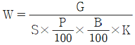
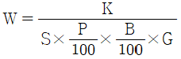
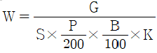
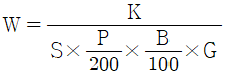
(정답률: 알수없음)
44. 생태계 단편화가 생물 서식환경에 미치는 영향으로 옳지 않은 것은?
- 서식처의 상실
- 서식처 면적 감소
- 주연부 감소
- 인접 서식처 간 거리 증가
(정답률: 알수없음)
45. 다음 비료 성분 중 부족하면 지엽의 생육이 빈약해지고, 잎의 색깔은 담황색으로 나타나게 되는 것은?
- N
- P
- K
- Ca
(정답률: 알수없음)
46. 자연형 하천공법이 추구하는 일반적 효과하고 볼 수 없는 것은?
- 수질 자정능력 향상
- 생물서식공간 조성
- 찬수공간 제공
- 하천용수 확보
(정답률: 알수없음)
47. 생태통로 조성방법 중 부적합한 것은?
- 동물유도를 위해 입구에 식생을 조성한다.
- 소형동물의 이동통로는 원형관 또는 생태관(eco-pipe)등 단순구조로 계획한다.
- 교량형 생태통로는 높이 1m 정도의 생울타리 등의 수림대를 설치한다.
- 양서류 또는 파충류의 이동을 위해 25~50cm 정도 폭의 이동통로를 배수구조물과 함께 조성해 준다.
(정답률: 알수없음)
48. 비탈면에 목본류를 도입하는 이유가 아닌 것은?
- 사면을 안정화 한다.
- 영구적 자연 조경미를 제공한다.
- 생태계로 복구하는데 걸리는 시간을 최대한 줄인다.
- 초기 피복률을 높이기 위해서 도입한다.
(정답률: 알수없음)
49. 지표 식생 피복으로부터 얻어지는 침식억제 기능과 관계 없는 것은?
- 면상침식
- 곡간침식
- 누구침식
- 지표고정
(정답률: 알수없음)
50. 생태통로에 의하여 보호받을 수 있는 종과 거리가 먼 것은?
- 차량과의 충돌로 높은 사망률을 보이는 종
- 강한 이동행태를 보이는 종
- 도로 등에 의하여 확산을 제약 받는 종
- 다른 동물의 사체를 먹이로 하는 종
(정답률: 알수없음)
51. 하천 둑을 밑폭 5m, 위폭 2m, 높이 2m의 50m 연장 둑을 초성하였을 때 취토 토사량은?
- 250m3
- 300m3
- 350m3
- 400m3
(정답률: 알수없음)
52. 다음 중 각 종별 서식조건이 잘못 연결된 것은?
- 산개구리 - 계류, 바위 밑
- 멧토끼 - 중 산간지대
- 족제비 - 산림, 주거지
- 청설모 - 중 고산지대
(정답률: 알수없음)
53. 생태천이에 대한 설명 중 잘못된 것은?
- 어떤 장소에 존재하는 생물공동체가 시간의 경과에 따라서 종 조성이나 구조를 변화시켜 다른 생물공동체로 변화해 가는 시간적 변화의 과정이다.
- 일반적으로 천이 초기에는 내음성이 높은 종간의 경쟁력이 우수한 종이 유리하고 후기에는 불안정한 환경에 잘 적응하고 산포 능력이나 휴면성이 있는 종자를 지닌 식물이 유리하다.
- 천이는 일반적으로 선구식생에서 중간식생을 거쳐 극상을 이룬다.
- 천이 초기에는 입지조건과 더불어 이입과 정착의 과정이 중요하기 때문에 종의 공급원이 그 토지나 주위에 존재하는가 어떤가에 따라 천이의 진행방법은 크게 달라진다.
(정답률: 알수없음)
54. 다음 중 개발사업에 따른 영향을 최소화시키기 위한 미티게이션(mitigation)의 개념을 잘못 설명한 것은?
- 대체 - 공사기간 중 환경을 보호 및 유지관리 함으로써 시간이 지나서 생기는 영향을 저감 또는 소실시키는 것
- 회피 - 공사의 전체 또는 일부를 실행하지 않음으로써 영향을 회피하는 것
- 최소화 - 공사의 실시 정도 또는 규모를 제한하는 것에 의해 영향을 최소화하는 것
- 수정 - 영향을 받은 환경 그 자체를 재생 또는 회복하는 것에 의해 영향을 수정하는 것
(정답률: 알수없음)
55. 일반적으로 생태복원 후 천이의 초기종에서 나타나는 목본식물의 생활사와 생리적 특성을 잘못 연결한 것은?
- 성장속도 - 빠름
- 종자크기 - 작음
- 내음성 - 없음
- 종자산포양식 - 중력산포
(정답률: 알수없음)
56. 하안 및 제방을 복원하는 방법의 설명으로 틀린 것은?
- 수변구역에 가축이나 사람이 들어가는 것을 제한하여 식생을 회복시키는 법은 가장 간단하며 성공률이 높다. 그러나 생물의 다양성은 매우 더디게 증가한다.
- 홍수의 위험이 있거나 유속이 빠른 강의 하안에는 버드나무말뚝을 설치하면 침식 등을 막을 수 있다. 이 때 가능한 수종은 내버들, 은버들 등을 사용한다.
- 하안의 자연형 복원을 위하여 강의 수로, 둑의 경사, 유지관리 등을 고려하여 하안을 처리 하여야 홍수 등에 대비한 복원이 가능하다.
- 하안에 버드나무를 식재하여 하안을 복원하였을 시는 5, 10, 15년 주기로 정기적으로 버드나무를 교체하여 주는 것이 좋다.
(정답률: 알수없음)
57. 다음 중 토양의 보비력과 가장 관계가 깊은 것은?
- 양이온 치환용량
- 응집 분산
- 염기포화도
- 전기전도도
(정답률: 알수없음)
58. 비탈면 뿜어 붙이기 공법에서 필요한 재료가 아닌 것은?
- 좋은 흙
- 고착제
- 비료
- 대립종자
(정답률: 알수없음)
59. 다음 중 환경조건별 서식 조류(鳥類)가 바르게 연결된 것은?
- 갈대밭, 억새, 줄풀 등 정수식물대 : 개개비, 묽닭, 청둥오리
- 풀밭 : 황로, 왜가리, 검은댕기 해오라기
- 관목, 덤불류 : 덤불해오라기, 쇠오리. 알락도요
- 교목 : 호반새, 고방오리
(정답률: 알수없음)
60. 수목식재 후 멀칭재로 토양을 피복하는 목적이 아닌 것은?
- 유효 토심의 확보
- 지표면의 수분 증발 제어
- 겨울철 지표면의 동결방지
- 부식질로의 환원
(정답률: 알수없음)
4과목: 경관생태학
61. 경계에 대한 설명으로 부적합한 것은?
- 인간의 간섭이 많은 지역에서는 상대적으로 곡선형 경계가 우세하다.
- 경계를 따라 또는 가로질러 야생동물이 이동한다.
- 경계의 길이와 내부서식지 비율은 생물 다양성에 매우 중요하다.
- 경계부에서 일반적으로 생물 다양성이 높고, 이러한 곳을 주연부 효과하고 한다.
(정답률: 알수없음)
62. 건설사업에 따른 각종 서식처의 파편화는 생물들의 서식공간을 감소시켜 생물다양성을 떨어뜨린다. 특히 습지서식처의 파괴는 영향예측을 통하여 저감 방안을 고려해야 하는데 그 방안 중에 하나가 대체습지이다. 이들 대체습지의 의무면적(Credit) 산정시 반드시 고려해야 할 사항이 아닌 것은?
- 영향을 받는 습지의 면적
- 영향을 받는 습지의 기능
- 영향을 받는 습지의 주변 토지 이용 형태
- 영향을 받는 습지의 보전 가치
(정답률: 알수없음)
63. 개발사업시 동ㆍ식물상 분야에 대한 환경영향평가의 근본적인 목적은?
- 서식처의 연결성 증가
- 특정 개체수의 증가
- 생물 다양성 보전
- 미적 경관 향상
(정답률: 알수없음)
64. 원격탐사 인공위성 정보에 관한 설명으로 잘못된 것은?
- 우리나라에서 자주 사용되는 인공위성 정보는 Landsat, IRS, 아리랑, IKONOS 위성정보이다.
- 원격탐사는 지구 표면에서 방출되는 에너지를 여러 가지 원격탐사 시스템에 기록한 것으로부터 시작되었다.
- Sensor 에 의해 감지되는 전자파 에너지는 수증, 대ㅣ 및 이온층의 영향을 받아 noise가 첨가되는 점을 고려해야 한다.
- 아리랑 위성영상은 세계 최초 첩보급 상용 위성으로 전자지도 제작, 해양 관측, 우주환경 관측을 목적으로 한다.
(정답률: 알수없음)
65. 우리나라 국가 기본도의 평면좌표계는?
- UTM 좌표계
- TM 좌표계
- WGS 좌표계
- Mercator 좌표계
(정답률: 알수없음)
66. 다음 중 경관 전체로서의 기능 즉, 생물의 이동이나 경관요소 간의 관련성을 설명하는 것은?
- 천이
- 군집
- 유전학
- 메타개체군이론
(정답률: 알수없음)
67. 해안사구에 대한 설명으로 옳은 것은?
- 우리나라의 대표적인 해안사구는 신두리 사구로서 해안국립공원으로 지정되었다.
- 해안 사구는 사빈의 모래가 파랑과 바람의 작용에 의해 낮은 구릉 모양으로 쌓여서 형성된 지형이다.
- 해안에 위치하기 때문에 식생이나 동물상은 특별히 중요하지 않고 경관요소나 해수욕장 등으로의 가치가 뛰어나다.
- 해안사구는 대부분 경관이 양호한 구간에 많이 형성되어 있으므로 충분히 개발하여 관광 및 위락시설을 조성하는 것이 지역경제와 해안경관을 위해 바람직하다.
(정답률: 알수없음)
68. 다음 성명의 ( )에 적절한 용어는?
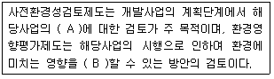
- A : 오염원, B : 최소화
- A : 입지 타당성, B : 최소화
- A : 오염원, B : 방지
- A : 입지타당성, B : 방지
(정답률: 알수없음)
69. 생태천이로 안햐 산림생태계는 산림군집의 기능적, 구조적 변화를 가져오게 된다. 이와 관련하여 Odum(1969)은 천이 후기 단계가 될수록 종다양성이 높고, 생태적 안정성이 높아진다는 이론을 제창하였으며, 생태계 구조적 특성을 정량적, 정성적으로 표현하였다. 다음 중 천이에 따른 산림 녹지경관의 변화에서 정성적 차원인 것은?
- 산림군집의 총 광합성량을 총생산량(Productivity)으로 나타낸다.
- 생태천이가 진행될수록 후기에는 생체를 유지하기 위한 호흡량이 높아져 P/B율은 1에 접근하게 된다.
- 천이의 후기단계에서 광합성에 의한 총생산량에서 개체유지를 위한 호흡을 뺀 순군집 생산량은 초기단계보다 오히려 낮다.
- 먹이사슬은 복잡한 망구조를 가지며 상당량의 생체량이 미생물에 의해 분해되는 부식질 먹이연쇄가 큰 비중을 차지하게 된다.
(정답률: 알수없음)
70. 지리정보시스템 구성요소가 아닌 것은?
- 자료(data)
- 소프트웨어와 하드웨어
- 이용자
- 인공지능
(정답률: 알수없음)
71. 다음 종 또는 개채군의 복원방법에 해당하지 않는 것은?
- 포획번식
- 방사
- 근친교배
- 이주
(정답률: 알수없음)
72. 비오톱 조성계획 요소에 관한 설명으로 부적합한 것은?
- 면적에 대한 단일한 목표값을 고려하여 비오톱 조성계획 요소를 명확히 한다.
- 비오톱 내 종의 유전자 흐름에 문제가 없도록 공간적으로 밀접한 결합을 유지해야 한다.
- 일반적인 코리더나 디딤돌 비오톱이 발달된 구조를 유지하는 것이 새롭게 설치하는 것보다 중요하다.
- 비오톱에 대한 악영향을 가능한 작게 유지하기 위해 충분한 에코톤을 유지해야 한다.
(정답률: 알수없음)
73. Diamond가 제시한 보호구 설계를 위한 기준으로 옳지 않은 것은?
- 보호구의 면적이 클수록 바람직하다.
- 같은 면적일 경우 여러개로 나눠 있는 것보다 하나로 있는 것이 바람직하다.
- 패취간의 거리가 가까운 것이 바람직하다.
- 같은 면적일 경우 주연부 길이가 큰 것이 유리하다.
(정답률: 알수없음)
74. 경작지의 경관생태 구성요소와 거리가 먼 것은?
- 포위된 숲
- 띠형 수림
- 공동주택지
- 습지 및 저수지
(정답률: 알수없음)
75. 비오톱과 그 곳에 서식하는 생물 사이의 결합은 절대적인 것이 아니라 지역에 따라 변화하는 상대적인 것이다. 이러한 관점에서 비오톱의 보호 및 조성에 있어서 원칙을 설명 한 것 중 잘못된 것은?
- 조성 대상지 본래의 자연환경을 복원하기 위해 현재 자연환경의 파악을 필수적이다.
- 순수한 자연생태계의 보전, 복원을 위한 비오톱 조성시 다양한 이용, 체험프로그램이 필요하다.
- 설계도면에서의 비오톱은 완성의 과정일 뿐이며 자연이 복원되어 완성상태가 되기 위한 계획 및 설계기술이 필요하다.
- 비오톱 조성은 행정 계획만으로 진행시키지 말고 어떤 형식으로든 시민참가를 도모한다.
(정답률: 알수없음)
76. 지리정보시스템(GIS)에서 기본도를 그림과 같이 A와 B 2가지의 자료 유형으로 재구성하였다. A와 B 형식을 옳게 차례대로 나열한 것은?
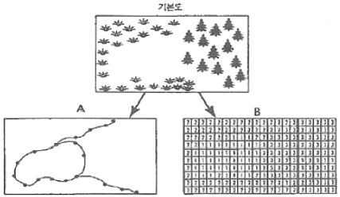
- 벡터(vector), 래스터(raster)
- 페리메터(perimeter), 셀(cell)
- 아노말리(anomaly), 그리드(grid)
- 커브(curve), 모자이크(mosaics)
(정답률: 알수없음)
77. 경관생태학적 고나점에서 환경영향평가는 개발사업으로 인한 문제점을 최소화하기 위한 평가 기법이다. 이 때 고려될 수 있는 경관요소가 아닌 것은?
- 생물종의 이동과 분포
- 생물종의 연령 구조
- 경관을 구성하는 경관요소의 구조와 유형
- 경관을 구성하는 경관요소의 배치
(정답률: 알수없음)
78. 비오톱에 대한 설명 중 틀린 것은?
- 비오톱이란 공간적 경게가 없는 특정생물군집의 서식지를 의미한다.
- 'Bios'는 생활, 생명을 의미하고, ‘tops'는 장소, 공간을 의미한다.
- 식물과 동물로 구성된 생물군집의 3차원 공간 서식지를 의미한다.
- 경관은 다양한 비오톱의 모자이크로 구성된다.
(정답률: 알수없음)
79. 다음 중 댐이 환경에 미치는 영향으로 거리가 먼 것은?
- 어류 등의 이동 저해
- 소하천의 감소, 수질의 변화
- 하류하천의 하상 재료 변화 및 하상의 상승
- 식생 및 동물 서식지역의 감소와 분리
(정답률: 알수없음)
80. 경관의 이질성(heterogeneity)에 대한 정의가 맞는 것은?
- 커다란 서식처가 2개 이상의 작은 서식처로 나누어지는 현상
- 경관의 간섭에 대해 적응성이 높은 성질
- 경관의 간섭에 대해 저항하는 정도
- 경관요소의 다양한 구성 정도
(정답률: 알수없음)
5과목: 자연환경관계법규
81. 개발제한구역의 지정 및 관리에 관한 특별조치법규상 개발제한구역의 경계선을 표시하기 위한 경계표석의 규격 및 설치기준으로 틀린 것은?
- 표석재료는 강화플라스틱(FRP), 표석색채는 녹색으로 한다.
- 개발제한구역 글씨는 음각 후 압출마감(흑색)하고, 번호(백색)는 도색마감으로 부착한다.
- 강화플라스틱과 콘크리트로 된 기초가 일체가 되도록 설치한다.
- 서체 : 고딕체, 색상 : 녹색(Pantone 370C)ㆍ백색(White 100%)ㆍ흑색(Black 100%)으로 한다.
(정답률: 알수없음)
82. 자연환경보전법상 자연환경보전기본계획에 포함되어야 할 사항으로 가장 적합한 것은? (단, 그 밖에 자연환경보전에 관하여 대통령령이 정하는 사항은 제외한다.)
- 야생동ㆍ식물의 서식실태조사에 관한 사항
- 생태계교란야생동ㆍ식물의 관리에 관한 사항
- 생태축의 구축ㆍ추진에 관한 사항
- 수렵의 관리에 관한 사항
(정답률: 알수없음)
83. 국토의 계획 및 이용에 관한 법률상 반드시 제1종지구단위계획구역으로 지정하여야 하는 지역은? (단, 관계법률에 의하여 당해 지역에 토지이용 및 건축에 관한 계획수립이 있을 겨우와 체계적ㆍ계획적인 개발 또는 관리가 필요한 지역으로서 대통령령이 정하는 지역 제외)
- 택지개발촉진법 규정에 의해 지정된 택지개발예정지구에서 시행되는 사업이 완료된 후 10년이 경과된 지역
- 도시계획법 규정에 의해 지정된 도시계획완충구역에서 시행되는 사업이 완료된 후 10년이 경과된 지역
- 임대주택법 규정에 의해 지정된 주택지조성사업계획지구에서 시행되는 사업이 완료된 후 10년이 경과된 지역
- 도시자연공원에서 해제되는 면적이 30만m2 이상으로 자연녹지지역으로 존치되는 지역
(정답률: 알수없음)
84. 자연환경보전법규상 위임 업무 보고횟수 기준으로 틀린 것은?
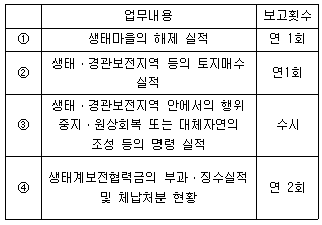
- ①
- ②
- ③
- ④
(정답률: 알수없음)
85. 야생동ㆍ식물보호법규상 생물자원보전시설 등록을 위한 인력 요건으로 가장 거리가 먼 것은?
- 국가기술자격법에 의한 생물분류기사
- 생물자원과 관련된 분야의 박사 이상 학위의 소지자
- 생물자원과 관련된 분야의 석사 이상 학위의 소지자로서 동 분야에서 1년 이상 종사한 자
- 생물자원과 관련된 분야의 학사 이상 학위의 소지자로서 동 분야에서 3년 이상 종사한 자
(정답률: 알수없음)
86. 환경정책기본법상 규정된 용어의 정의로 옳지 않은 것은?
- “환경오염”이라 함은 사업활동 기타 사람의 활동에 따라 발생되는 대기오염, 수질오염, 토양오염, 해양오염, 방사능오염, 소음ㆍ진동, 악취, 일조방해 등으로서 사함의 건강이나 환경에 피해를 주는 상태를 말한다.
- “환경훼손”이라 함은 야생동ㆍ식물의 남획 및 그 서식지의 파괴, 생태계질서의 교란, 자연경관의 훼손, 표토의 유실 등으로 인하여 자연환경의 본래적 기능에 중대한 손상을 주는 상태를 말한다.
- “환경용량”이라 함은 일정한 지역안에서 환경의 질을 유지하고 환경오염 또는 환경훼손에 대하여 인간이 수용ㆍ정화 및 복원할 수 있는 한계를 말한다.
- “환경보전”이라 함은 환경오염 및 환경훼손으로부터 환경을 보호하고 오염되거나 훼손된 환경을 개선함과 동시에 쾌적한 환경의 상태를 유지ㆍ조성하기 위한 행위를 말한다.
(정답률: 알수없음)
87. 백두대간보호에 관한 법률 시행령상 백두대간 보호지역 중 완충구역 안에서 규정에 의한 개발행위를 하고자 하는 관계 행정기관의 장이 산림청장과 사전협의시 반드시 고려하여야 할 사항과 가장 거리가 먼 것은?
- 백두대간이 단절되지 아니할 것
- 산림ㆍ경관 및 야생동ㆍ식물 등의 보호에 지장을 초래하지 아니할 것
- 지형 및 식생의 분포 등의 특성으로 인하여 특별히 보호할 가치가 있다고 인정되는 지역에 해당하지 아니할 것
- 백두대간의 보호를 위한 시설 또는 자연환경보전ㆍ이용시설을 설치할 것
(정답률: 알수없음)
88. 자연공원법상 자연공원 지정고시 및 지정기준에 관한 사항이다. ( )안에 알맞은 것은?
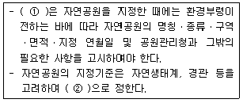
- ① 국토관리청, ② 환경부령
- ① 공원관리청, ② 환경부령
- ① 공원관리청, ② 대통령령
- ① 국토관리청, ② 대통령령
(정답률: 알수없음)
89. 야생동ㆍ식물보호볍규상 박제업자가 야생동물의 박제품제조 또는 판매를 위해 변경등록을 하지 아니한 경우의 3차 행정처분기준(개별기준)으로 옳은 것은?
- 허가취소
- 등록취소
- 영업정지 1월
- 영업정지 3월
(정답률: 알수없음)
90. 독도 등 도서지역의 생태계 보전에 관한 특별법령상 무인도서등의 자연생태계 등의 조사에 포함되어야 할 내용으로 가장 적합하게 나열된 것은? (단, 기타 자연생태계 등의 보전을 위하여 특히 조사할 필요가 있다고 환경부장관이 인정하는 사항은 제외한다.)
- 인구수 및 가구수, 해안의 상태 및 건축물 기타 공작물의 현황, 하천현황
- 동ㆍ식물의 분포 및 현황, 특이한 지형ㆍ지질 및 자연환경의 현황, 백두대간 및 정간의 분포, 생태관리기관현황
- 거주민 생업현황, 동ㆍ식물의 분포 및 현황, 특이한 지형ㆍ지질 및 자연환경의 현황
- 동ㆍ식물의 분포 및 형황, 식생현황, 특이한 지형ㆍ지질 및 자연환경의 현황, 해안의 상태 및 건축물 기타 공작물의 현황
(정답률: 알수없음)
91. 농지법규상 실습지 등으로 농지를 소류할 수 있는 공공 단체 등의 범우에 해당하지 않는 것은?
- 전통사찰보존법 규정에 따라 지정ㆍ등록된 전통사찰
- 엽연생산협동조합법에 따른 엽연초생산협동조합
- 한국전통식품보전법 규정에 따른 식품개발진흥원
- 농약관리법 규정에 따라 등록을 한 농약의 제조업자
(정답률: 알수없음)
92. 습지보전법상 습지보호지역에서 정당한 사유 없이 광물의 채굴로 인해 받은 행위중지의 명령을 위반한 자에 대한 벌칙기준으로 옳은 것은?
- 3년 이하의 징역 또는 2천만원 이하의 벌금에 처한다.
- 2년 이하의 징역 또는 1천만원 이하의 벌금에 처한다.
- 500만원 이하의 과태료에 처한다
- 200만원 이하의 과태료에 처한다
(정답률: 알수없음)
93. 환경정책기본법령상 환경부장관이 환경현황조사를 의뢰하거나 환경정보망의 구축ㆍ운영을 위탁할 수 있는 전문기관으로 거리가 먼 것은? (단, 그 밖의 환경부장관이 지정하여 고시하는 기관 및 단체는 제외)
- 국립환경과학원
- 한국환경기술진흥공사
- 한국환경자원공사
- 한국수자원공사
(정답률: 알수없음)
94. 환경정책기본법령상 수질 및 수생태계의 “하천”의 “사람의 건강보호” 기준으로 옳은 것은?
- 6가 크롬(Cr6+) : 0.1 mg/L 이하
- 테트라클로로에틸렌(PCE) : 0.⑤ mg/L 이하
- 벤젠 : 0.1 mg/L 이하
- 1.2-디클로로에탄 : 0.⑤ mg/L 이하
(정답률: 알수없음)
95. 국토기본법상 지역특성에 맞는 정비나 개발을 위하여 필요하다고 인정하는 경우 관계중앙행정기관의 장과 협의하여 수립하는 지역계획에 해당하지 않는 것은? (단, 그 밖에 다른 법률에 의하여 수립하는 지역계획제외)
- 광역권 개발계획
- 특정지역 개발계획
- 개발촉진지구 개발계획
- 관광권 개발계획
(정답률: 알수없음)
96. 국토의 계획 및 이용에 관한 법률상 도시관리계획결정의 실효에 관한 사항이다. ( ① )안에 알맞은 것은?
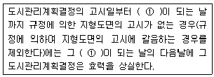
- 6월
- 1년
- 3년
- 3년
(정답률: 알수없음)
97. 야생동ㆍ식물보로법상 벌칙기준 중 1년 이하의 징역 또는 5백만원 이하의 벌금에 처하는 행위는?
- 멸종위기야생동ㆍ식물에 해당하지 아니하는 야생동물 중 환경부령이 정하는 야생동물을 시장ㆍ군수ㆍ구청장의 허가없이 수출ㆍ수입ㆍ반출 또는 반입한 자
- 국제적멸종위기종 및 그 가공품을 환경부장관의 승인없이 수입 또는 반입 목적외의 용도로 사용한 자
- 생물다양성 보전을 위하여 보호할 가치가 높은 것으로서 환경부장관이 관계 중앙행정기관의 장과 협의하여 지정ㆍ고시하는 생물자원을 환경부장관의 승인 없이 국외로 반출한 자
- 지정된 수렵장외의 장소에서 수렵한 자
(정답률: 알수없음)
98. 농지법상 용어의 정의에 관한 설명 중 틀린 것은?
- “농업인”이란 농업에 종사하는 개인으로서 농림수산 식품부령으로 정하는 자를 말한다.
- “농업경영”이란 농업인이나 농업법인이 자기의 계산과 책임으로 농업을 영위하는 것을 말한다.
- “자경”이란 농업인이 그 소유 농지에서 농작물 경작 또는 다년생식물 재베에 상시 종사하거나 농작업의 2분의 1 이상을 자기의 노동력으로 경작 또는 재배하는것과 농업법인이 그 소유 농지에서 농작물을 경작하거나 다년생식물을 재배하는 것을 말한다.
- “위탁경영”이란 농지 소유자가 타인에게 일정한 보수를 지급하기로 약정하고 농작업의 전부 또는 일부를 위탁하여 행하는 농업경영을 말한다.
(정답률: 알수없음)
99. 자연공원법규상 공원자연보존지구안에서 허용되는 최소한의 공원시설 및 규모기준으로 틀린 것은? (단, 휴양 및 편익시설 기준)
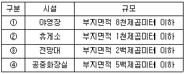
- ①
- ②
- ③
- ④
(정답률: 알수없음)
100. 국토의 계획 및 이용에 관한 법률상 용어에 관한 정의이다. ( ① )안에 알맞은 것은?
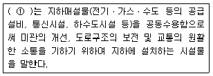
- 공동구
- 공용구
- 공동수용구
- 수용구
(정답률: 알수없음)